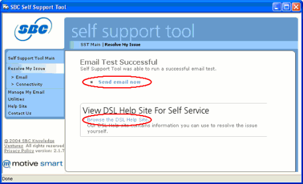

|
Currently, the SBC Self Support Tool is being shipped to new SBC Yahoo! DSL Members who install the SBC Yahoo! DSL service with the 5100B modem. However, the Self Support Tool will be available for download in the future.
The SBC Self Support Tool is the latest SBC wizard–driven application designed to proactively detect and resolve common DSL service issues. The Self Support Tool can resolve a range of issues from connectivity to email problems as well as provide some additional helpful utilities.
The Self Support Tool will attempt to resolve an issue in order to get you back up and running. If you still need to call Technical Support, the Self Support Tool will provide you with a means to more effectively communicate with the Technical Analyst, drastically reducing your time on the phone.
Self Support Tool Main Interface
When launched from the Program menu or the system icon tray, the Self Support Tool sports an easy-to-use interface that quickly aids DSL Members to find how to resolve common issues.
You can launch the Self Support Tool Main Interface by double-clicking on the White Van icon in the system tray or by selecting from the Program Menu SBC Self Support Tool.
In addition to launching from an icon, the Self Support Tool can be launched from a simple dialog box.
This dialog box will appear if the Self Support Tool detects an error from common supported Internet applications, such as Microsoft’s Internet Explorer® and Outlook Express®. Upon selecting solve my issue, the Self Support Tool will launch and begin to resolve the issue.
Email Issues
If you are experiencing a problem sending or receiving email from a supported email application, you can select Cannot send/receive email from the Self Support Tool Main Interface to begin a series of tests that will attempt to determine the reason for your email issue.
If the Self Support Tool does not detect any issues with your email, the tool will allow you to immediately test your email for sending and receiving by selecting Send email now.

In the event you want more information about email, select the Browse the DSL Help Site link for specific information about your email issues.
DSL Connection Issues
If you are experiencing an issue with your connection to the Internet, you can select the Cannot browse the Internet option from the tool’s main interface. This will begin a series of tests on your Internet connection.
Since there are many ways a to cause a connection issue, the Self Support Tool simplifies identifying the most common problems by running a series of tests on your DSL connection and modem. If the tool is able to isolate the issue, the tool will guide you through easy to follow instructions to correct the issue.
In the instance depicted below, the data cable was accidentally unplugged. The instructions will guide you through a flow of how to check and reconnect the cables. Once the data cable is plugged back in, the Self Support Tool will retest the connection to ensure the issue was resolved.
If issue is resolved, the Self Support Tool will return with a successful test and you can begin surfing again by selecting Start browsing now.
In the event you want more information about DSL connectivity, or you think you have additional problems, you can select the I want to browse the DSL Help site link for specific information about connectivity issues.
If the Self Support Tool is unable to completely resolve your problem, it will display the toll free Technical Support phone number along with the results of the tests that were run by the Self Support Tool.
As seen below, the identified potential issues are displayed at the top of the page so that you can communicate them quickly to the Technical Analyst.
This page also displays basic support information usually manually gathered from different areas of the PC. This convenience will save you time it would normally take to hunt for this information, and simplifies for the SBC Technical Analyst to help get your service back up and running.
Manage Email and Utilities
The Self Support Tool also provides you with email management tools and utilities so that your Internet experience can be simplead anjoyable. These tools and utilities address common actions needed in order to keep your email and Internet connection running smoothly.
The SBC Self Support Tool is designed to make the Internet experience better for you. Most Members do not experience service issues, though if problems occur SBC wants to ensure that it provides a tool to quickly and efficiently aid our Members. SBC has taken input from our Members, Customer Care, and industry research to create this tool that will hopefully provide the best DSL service possible and more importantly, help you enjoy your time spent online.
|